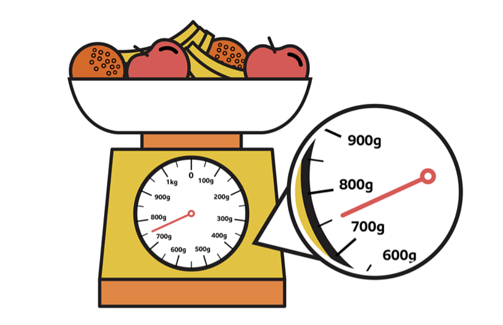
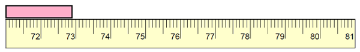

Let’s learn how to interpret readings on scales and measure to the nearest millimetre!
Scales are tools used to measure things like weight, length, or capacity. We use scales to understand how much something weighs, how long it is, or how much it can hold.
Interpreting Readings on Scales
What are scales?
Scales are tools used to measure things like weight, length, or capacity. They often have marks or divisions that show measurements.
How to read scales:
- Look for the numbered intervals on the scale (e.g., 1, 2, 3… or 10, 20, 30…).
- Check how many smaller marks are between the numbers to find out what each mark represents (e.g., each mark could represent 1 unit or 0.5 units).
Example: If the scale has marks every 1 kg, and the needle points between 3 kg and 4 kg, the reading might be 3.5 kg.

Measuring to the Nearest Millimetre
What is a millimetre?
A millimetre is the smallest unit on a ruler (1 cm = 10 mm).
How to measure:
- Use a ruler and align the zero mark with the edge of the object.
- Read the measurement at the other end of the object, noting the smallest line (millimetre) it reaches or passes.
Example: If an object ends just past 6.3 cm on the ruler, the length is 63 mm.
